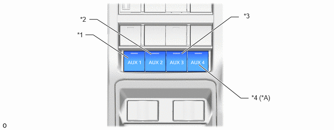

| Last Modified: 10-07-2025 | 6.11:8.1.0 | Doc ID: RM100000002QHQB |
| Model Year Start: 2025 | Model: Tacoma | Prod Date Range: [12/2024 - ] |
| Title: POWER DISTRIBUTION: AUXILIARY SWITCH SYSTEM: GENERAL; 2025 - 2026 MY Tacoma Tacoma HV [12/2024 - ] | ||
GENERAL
OUTLINE
(a) There are auxiliary switches located on the left side of the instrument panel that control 12 V DC fused accessory circuits throughout the vehicle to which electrical accessories can be connected.
(b) The auxiliary switch system can be operated when the ignition switch ON.
Auxiliary Switches
|
*A |
Models with 4 Switch |
- |
- |
|
*1 |
AUX 1 (Stereo Component Switch) |
*2 |
AUX 2 (Stereo Component Switch) |
|
*3 |
AUX 3 (Stereo Component Switch) |
*4 |
AUX 4 (No. 1 Auxiliary Direct Current Switch) |
FUNCTION
Models with 3 Switch
|
Item |
Specification |
Pigtail Wire Color |
|
AUX 1 (Stereo Component Switch) |
15A fused 12 V DC circuit |
Black |
|
AUX 2 (Stereo Component Switch) |
10A fused 12 V DC circuit |
Green |
|
AUX 3 (Stereo Component Switch) |
5A fused 12 V DC circuit |
White |
Models with 4 Switch
| *: This circuit is an unswitched ignition power source, it provided that always powered when the ignition switch ON. | ||
|
Item |
Specification |
Pigtail Wire Color |
|
AUX 1 (Stereo Component Switch) |
40A fused 12 V DC circuit |
Blue |
|
AUX 2 (Stereo Component Switch) |
20A fused 12 V DC circuit |
Red |
|
AUX 3 (Stereo Component Switch) |
15A fused 12 V DC circuit |
Black |
|
AUX 4 (No. 1 Auxiliary Direct Current Switch) |
10A fused 12 V DC circuit |
Green |
|
IG-P* |
10A fused 12 V DC circuit |
White |
PRECAUTION
(a) To avoid a blown fuse do not connect accessories that use more 12 V DC current than the fuse value of an auxiliary switch circuit.
(b) Do not cut or modify the main vehicle wire harness when connecting accessory electronics. Use an accessory wire harness pigtail to connect electric accessories to vehicle auxiliary switch system.
(c) The auxiliary switch system wire harness connectors may have waterproof caps installed on them, which will need to be removed prior to connecting an accessory wire harness pigtail.
(d) To prevent battery discharge do not use the auxiliary switches longer then necessary when the engine*1 is not running or HEV system*2 is stopped.
HINT:
*1: Gasoline models
*2: HEV models
(e) In certain conditions, when the 12 V battery voltage is very low, the auxiliary switch system may automatically shut off. If this occurs reduce vehicle electrical power usage and the system will turn back on after the 12V battery voltage increases.